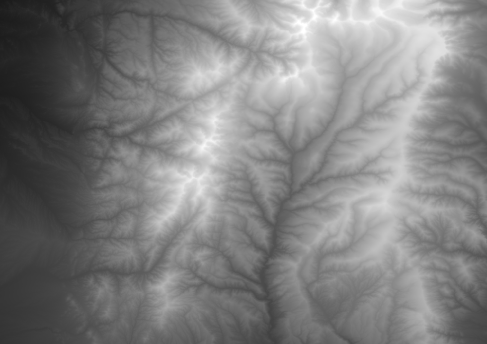
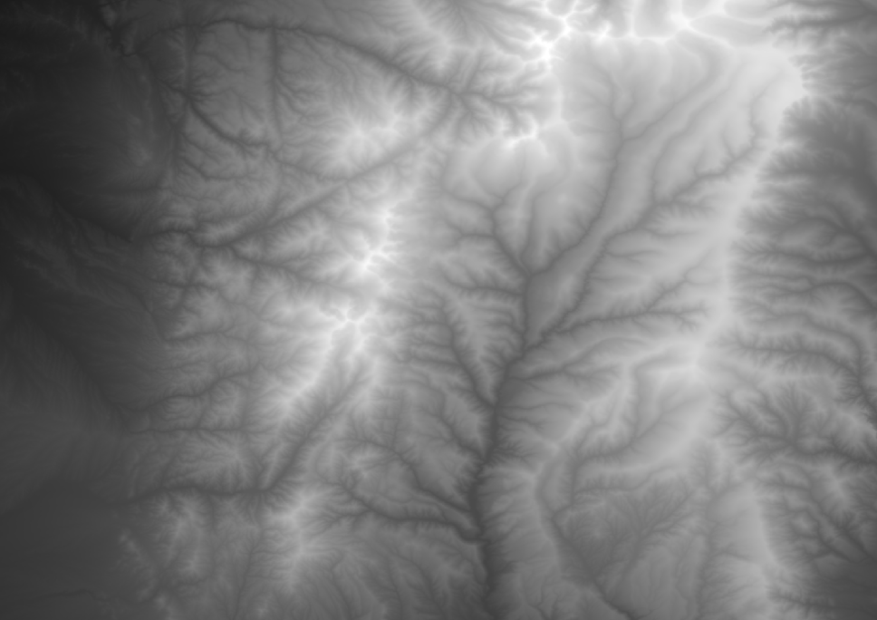

Computational Fabrication

This page is a general overview of the projects, more details and project files can be found here: Github Repository Computational Fabrication
These projects showcase my work in a computational fabrications course, exploring the intersection of design, coding, and 3D printing. Each project was developed in Grasshopper-Rhino using Python and brought to life with a Creality Ender 3 3-D printer.
 
